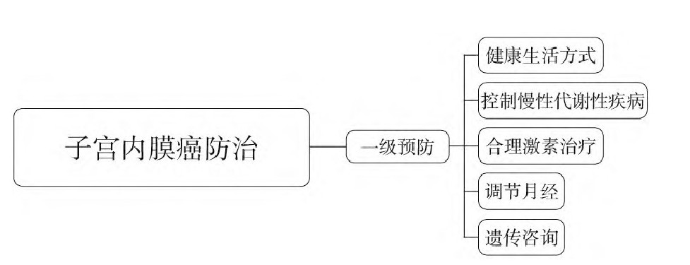
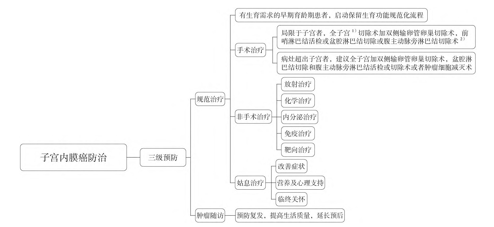
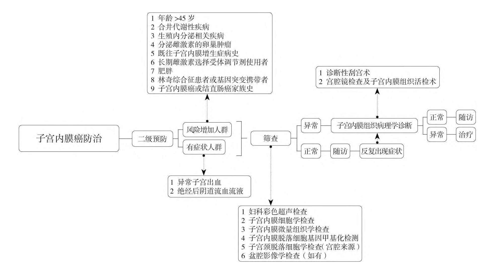

1Background & Framework
- Burden: EC most common gynecologic malignancy; #1 in Beijing/Shanghai/Guangzhou.
- Model: cervical 3-level prevention mature; EC system needs unification.
- Goal: reduce incidence · raise early diagnosis · improve survival & QoL.
2Primary Prevention — Risk Factors
45+ y
risk rises sharply
Obesity
metabolic syndrome
Lynch
genetic risk
- Modifiable: obesity · metabolic syndrome · unopposed estrogen · lifestyle (diet/exercise).
- Hormonal: estrogen exposure (ovulatory dysfunction · estrogen-producing tumors).
- Genetic: Lynch syndrome mutation carriers — high-risk surveillance.
- Aim: prevent disease before onset, esp. in high-risk groups.
Early
menarche
Late
menopause
Nulliparity
infertility
Weight
key lever
Metabolic
key lever
Genetic
screening
- Multidisciplinary: gynecology · endocrinology · genetics · nutrition collaborate.
- Lifestyle: exercise & diet control reduce obesity-driven estrogen excess.
- Metabolic: manage diabetes/metabolic syndrome — key modifiable targets.
- Counseling: genetic counseling & Lynch surveillance in high-risk families.
- Hormonal: balance estrogen exposure; progestin protection where indicated.
Fig 1 · Primary
Lifestyle & risk-factor control + genetic counseling.
Fig 2 · Secondary
TVS · cytology · methylation · biopsy — early detection.
Fig 3 · Tertiary
MDT treatment · rehab · long-term follow-up.
3Secondary Prevention — Methylation Screening
2
approved products (incl. Origin-Poly)
4
gene combinations
4
sampling routes
- Approved kits: Wuhan Kaideweisi & Beijing Origin-Poly (CDO1/CELF4) — officially approved.
- Combinations: CDO1/AJAP1/GALR1 · CDO1/CELF4 · BHLHE22/CDO1/HAND2 · BHLHE22/CDO1/CELF4.
- Sampling: uterine/cervical brush · vaginal tampon · urine.
- Performance: Se 87.0–94.51% · Sp 86.0–95.5% — superior to traditional strategies; community validation ongoing.
High-risk groups: >45 y · obesity/metabolic syndrome · postmenopausal bleeding/abnormal discharge · Lynch/family history.
4Three-Level Prevention Flowcharts (Fig 1–3)

Fig 1 · Primary
Risk-factor control, lifestyle & genetic counseling.

Fig 2 · Secondary
TVS → cytology/methylation → biopsy (gold standard) → hysteroscopy targeted biopsy.

Fig 3 · Tertiary
Surgery · RT/CT · hormonal · immuno · targeted; rehab & follow-up.
7
secondary tools
4
treatment modalities
MDT
tertiary core
- Secondary tools: history risk assessment · TVS · cytology · methylation · biopsy · hysteroscopy · imaging staging.
- Molecular testing: refines diagnosis, guides individualized treatment & prognosis.
- Tertiary core: MDT precision treatment + palliative care + regular follow-up & rehab.
- Community step: methylation screening needs community-population validation next.